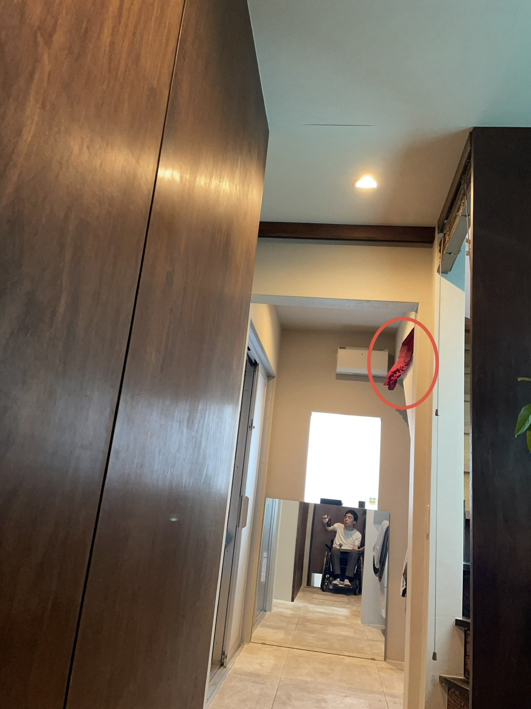
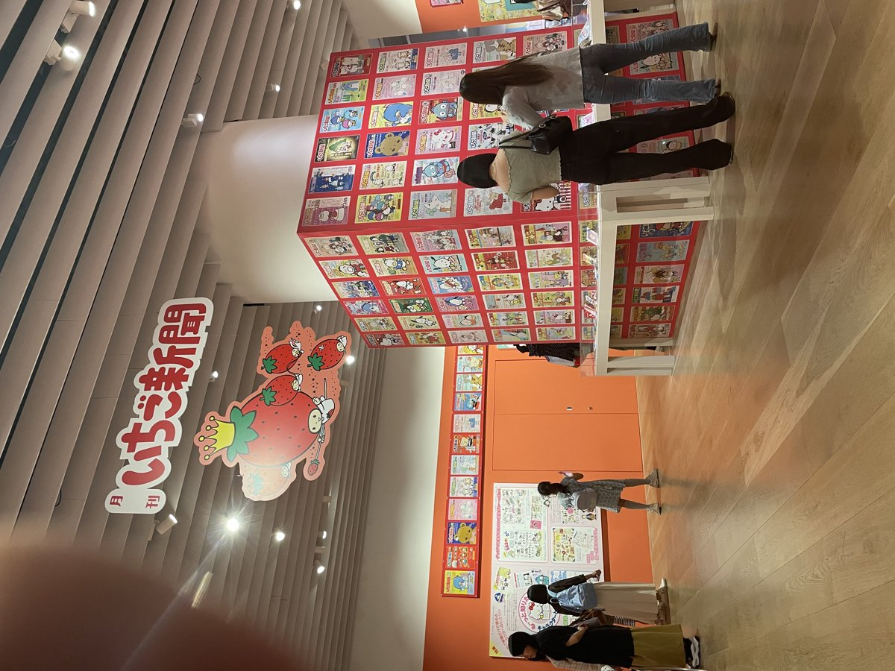
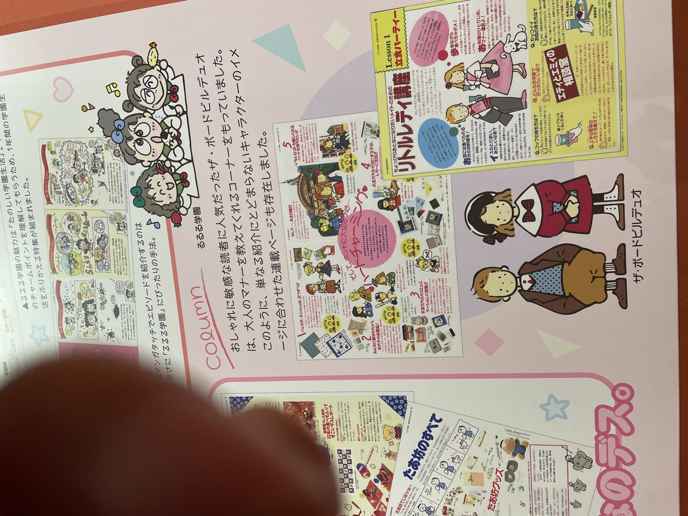
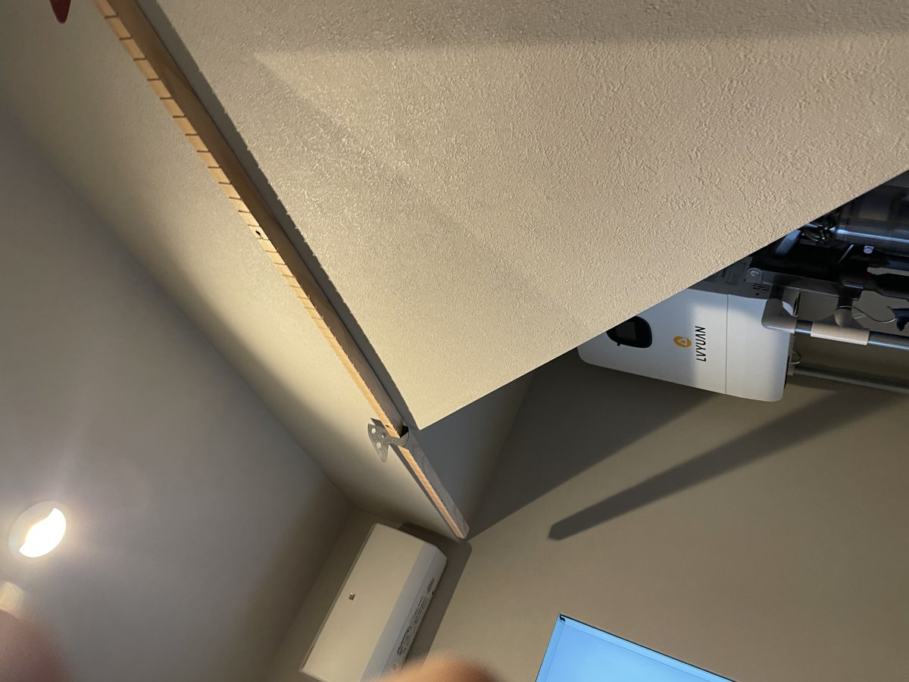
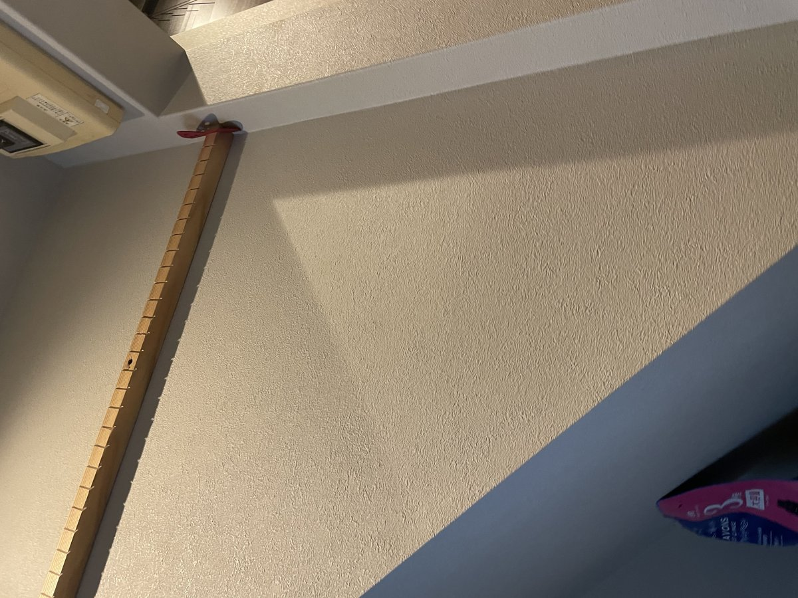

太陽光発電を導入したとき、地味に頭を悩ませたのが屋内に引き込む配線の処理でした。エアコンの上を這わせて天井際を通すしかなく、そのままだとただの配管がむき出しになる。どうせ隠すなら、見るたびにちょっと嬉しくなるものにしたいと思い、3Dプリンターでオリジナルのカバーを作ることにしました。玄関を入ってふと天井を見上げた人が「何だこれ？」となる、そんな小さな仕掛けです。「かわいい」を暮らしの中で大事にしている方に、特に読んでもらいたい話です。
配線を隠すだけならただのモールやカバー材で十分です。でもせっかく自分でデザインできるなら、と考えているうちに、最近自分の中で気になっていた2つのモチーフが浮かんできました。
「かわいい」を真正面から学ぶのは、正直すこし勇気が要りました。それでも食わず嫌いせずにサンリオの展示へ足を運んでみると、そこには「かわいい」という造形がどう作られているかのロジックが詰まっていて、妙に感心してしまいました。丸み、ツヤ、左右非対称の揺らぎ——理屈ではなく「なんかかわいい」と感じさせる作り方を、自分の制作にも取り入れたくなりました。
水玉や触手のようなモチーフが連続して増殖していく構成。配線を1本のカバーで隠すのではなく、小さな有機体を連続させて、配管全体をオブジェに変えてしまうというアプローチがここから生まれました。


実用と表現を両立させる方法として、「かわいいきのこを連続させる」という形に行き着きました。
1つ1つは小さな、丸みを帯びたきのこのようなパーツ。それを配管に沿って連続させることで、無機質な配線が、有機的に増殖するオブジェへと姿を変えます。3Dプリンターなら、同じ形を量産しながら少しずつ向きや角度を変えられるので、この「連続する有機体」を再現するのにちょうど向いていました。
正直に言うと、それまで「かわいい」を意識して何かを作ったことはありませんでした。でもサンリオ展で実際に体感して気づいたのは、「かわいい」は単なる装飾やテイストの一つではなく、人の気持ちをふっとゆるめる、れっきとした「力」を持っているということでした。
無機質な配管も、かわいいモチーフをまとった瞬間に、見た人の表情がゆるむものに変わる。理屈や説明より先に、心の方が先に動いてしまう。これは大工仕事や設計のロジックだけでは生み出せない種類の説得力で、特に「かわいい」を大事にしている方、日常の中でそれを必要としている方にこそ、まっすぐ届くものだと感じています。
この記事は、そんな「かわいい」の力を信じてくれる方——特に女性の読者の方に向けて書いています。実用一辺倒になりがちな住まいの中に、ふと心がゆるむポイントを一つ増やせたら。今回の配線カバーは、その小さな実験でもあります。
配線を覆う前段階、下地となる木製のレールを廊下のコーナーに沿って取り付けているところです。この棒材には等間隔に45度の溝を刻んであり、3Dプリンターで出力したパーツをその溝に差し込んでいくだけ、という単純な仕組みにしています。


木材に45度で溝を彫って、そこに3Dプリンターのパーツを差し込んでいるだけ。仕組みとしてはとてもシンプルです。
接着剤もビスも使わず、溝に差し込むだけの固定方法にしているのがポイントです。45度の角度を付けているのは、ただ垂直に挿すよりも力がかかったときに抜けにくく、かつ見る角度によってパーツの陰影が変わって表情が出るため。1パーツが壊れても、抜いて差し替えるだけで直せるので、メンテナンス性も兼ねた施工方法です。木工の下地さえ作ってしまえば、あとは3Dプリンターでパーツを量産して差し込んでいくだけ——大工仕事と3Dプリンターをつなぐ、ちょうどいい接点だと思っています。
エアコン脇、配線が壁を立ち上がる場所に実際に取り付けた様子は、記事冒頭の写真の通りです。赤丸の部分が、3Dプリンターで製作したきのこ型のカバーオブジェ。廊下の奥、視線がふと止まる場所に置くことで、配線処理という地味な作業の跡が、ちょっとしたお気に入りのポイントに変わりました。
普段は隠してしまうような場所こそ、手をかける価値がある。配線処理のような「地味だけど避けて通れない作業」に、かわいさや表現を持ち込めるのが、3Dプリンターでものづくりをする面白さだと思っています。「かわいい」は気休めではなく、暮らしを軽くする力そのもの。これからも、実用と「かわいい」を両立させるものづくりを続けていきたいです。
あなたの「かわいい」の形に、させてもらえませんか？
配線隠しに限らず、暮らしの中の「ここ、なんとかしたいけど無機質になりがち」という場所。その人にとっての「かわいい」を聞きながら、形にする3Dプリンター制作も承っています。気になった方は、お問い合わせからお気軽にどうぞ。
かわいいを相談してみる →